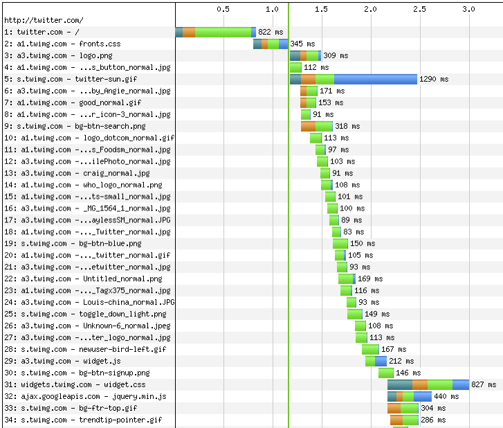
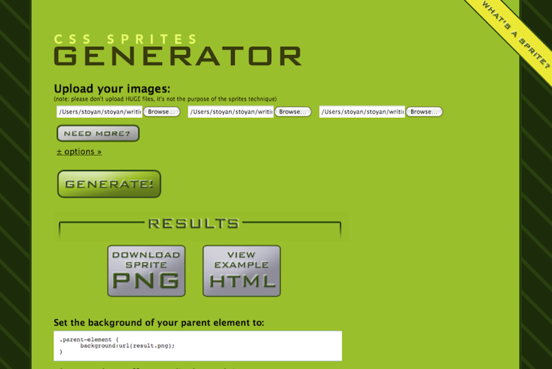

Reducing the number of page components is the performance golden rule, the single most important thing when it comes to building faster pages. If you have time for only one performance optimization, focus on this one.
Having fewer page components sounds like common sense - when you have fewer images, scripts and styles, the page becomes lighter and therefore it should load faster. However having fewer components doesn't necessarily mean stripping features from the page. In this chapter (and the book) the assumption is that you have a page that needs to be optimized to load faster while keeping the exact same look and the exact same features.
In an effort to provide a deeper understanding of the art and science of performance optimization, this chapter goes into some technical details such as how HTTP and TCP/IP work. If these topics are new to you and you feel a little overwhelmed, don't be alarmed; just give them some time to sink in.
In order to optimize page loading times you need to have an idea of what's going on with that page - how exactly does the page get loaded in the browser and what could potentially be slowing it down. If you don't know that you'll be shooting in the dark and there's always the risk of wasting time and effort optimizing the parts that are already relatively fine.
It's also helpful to know how the page loading process works in general - from typing a URL into the browser to rendering a completely loaded page.
To help you visualize what's going on behind the scenes as the page loads, there are the so-called waterfall views provided by a number of developer tools. To mention just two examples:

Figure 3.2. shows the waterfall chart produced by WebPageTest when loading twitter.com in IE7. You see that the HTML page is downloaded first, followed by the other individual components (scripts, styles, images) linked to from the page or from the other components (e.g. background images linked from CSS). You may notice that the components are not downloaded all at the same time. In fact this figure is a partial screenshot; the list of components continues until all of them are downloaded. The view of the components getting downloaded forms a picture that indeed looks like a waterfall.
You can see on this screenshot that twitter.com's HTML page is loaded in under a second while the page plus all the components take over four seconds. In this case, as with most sites out there, the venerable 80/20 rule applies. The page itself takes only about 20% of the total time while most of the time is spent fetching components. So when you plan an optimization, it makes sense to focus on where you can achieve the best results. Saving half of 80% will be a significant and noticeable gain, while cutting 20% down in half - not so much.
You can see in the waterfall chart that each component has a bar with different color-coded information. Each of these bars represents an HTTP request and the colors in the bars represent a specific activity. The length of a bar or a piece of it corresponds to the time taken by each of the activities. Let's examine these colors closer, taking the first bar - Twitter's HTML page - as an example (Figure 3.3.).
Dark green represents the time taken to perform a DNS lookup. DNS (Domain Name Service) lookup is the process of matching the friendly domain name twitter.com to an IP address (such as 128.242.240.20), which the browser needs in order to know how to get in touch with the server. Think of the DNS lookup as being like a phone book: your browser knows the name (twitter.com) but needs the number (the IP address).
You can see on the waterfall chart on Figure 3.2. that a separate DNS lookup needs to be done for every domain (twitter.com, a1.twimg.com, a3.twimg.com, s.twimg.com) because sub-domains may live on a different server with a different IP address.
[[ Is it possible use the same colors from the graphic to highlight the italics part of the text? For example use dark green to style DNS lookup in the first number point]]
If you look at the overall waterfall picture you'll notice that there's not a lot of blue bars. This means that significant time is being spent not downloading files.
You may often hear lines such as "everybody has broadband these days" or "our target audience is 30-something professionals and they all have fast connections." These are excuses not to invest in speeding up a site and are, in fact, a disservice to the user. There are several things wrong with such "broadband" statements.
First of all, there are many users with slow connections - both in and outside the US. Some users are still on modem connections but many more are surfing the web using smart phones, which are particularly prone to having problematic connections. Other users are sharing a WiFi connection either at a café or at home. It doesn't take much to slow down a shared WiFi connection - having someone next to you on a video chat or even having your microwave oven on are just two examples of things that can interfere with your downloads.
Additionally, a little-known fact is that the upstream bandwidth is usually just 20% of the total bandwidth advertised by the Internet Service Provider (ISP) and this matters not only for big file uploads but for requesting regular page components too.
And finally, as you can see in the waterfall diagrams, a significant amount of time is spent in activities other than downloading files. Broadband can only help when it comes to the blue bars.
You've probably heard the humorous term "intertubes" used to describe the Internet infrastructure as series of tubes. This is incorrect, but it can still be used as a way to visualize bandwidth. If you think of the dial-up modem connection as a regular pipe, then the broadband connection will be a fat pipe with a bigger diameter.
What travels inside those pipes are packets. Every file is sent in a series of small packets. The packets travel pretty fast, in the best case at around 2/3 of the speed of light and that is great, there isn't much room for improvement there. A fat broadband pipe means that more and bigger packets can travel in parallel, while a narrow pipe can handle fewer and smaller packets, mainly in sequence one after the other, which slows down the transfers.
The problem is that the fat tube is often not utilized to its potential. You can either accept that as a fact and skip the next section of the chapter, or brace yourself for some low-level details.
In order to initiate a file transfer, the browser and the server need to establish a connection between the two of them. The time it takes to establish a connection is represented by the orange parts of the bars in the waterfall graph.
A new connection (Figure 3.4.) is established by performing a three-way handshake:

These handshake packets are small and regardless of the available bandwidth, they travel at the same speed. A user may have a fast connection, but at this stage it will not be used.
Once a connection is established, then the actual transfer of a file (say, an image) can start. The file is usually sent in several packets, depending on its size. The server sends one packet and waits for acknowledgement ACK from the browser. The ACK may additionally say something like "hey, I can handle bigger packets", so the server sends a bigger packet. This repeats several times until the connection is "saturated" with the right size packets. This process is known as TCP slow start and is another reason why broadband is less important than we might think. A fast connection definitely helps for downloading bigger files, but for a series of small files spread across different domains (each requiring a DNS lookup, a connection and a slow start), it's not all that helpful.
When it comes to network transfers, you can say it's a jungle out there. The browser and client don't actually talk directly to each other; there are ISPs and all kinds of proxies between them. Many bad things may happen in the network jungle that prevent proper fast downloads. Sometimes a packet is lost, or it's dropped somewhere along the way. In this case the server has to resend it, if the server doesn't receive an [ACK] after a timeout. Sometimes the client is overwhelmed by too many packets (imagine a mobile device with limited memory) and cannot ACK anymore. That's also the reason for the existence of the TCP slow start process - the server cannot know in advance what type of client is on the other end and therefore takes baby steps in order to determine that.
There's a tool called NetMon, which gives an overwhelming amount of details of the network activity on Windows at the packet level. Another tool from Microsoft works on top of NetMon and is called VRTA (Visual RoundTrip Analyzer); it gives a much friendlier view of the data. You can see an example request on Figure 3.5. which shows visually the TCP slow start effect. The little blue bars represent the gradual opening of the TCP window size. You can also see a pink line, which shows when the connection is established and a grey line, which shows the TTFB. Figure 3.6. shows what you see when you mouse over a request in VRTA; you can probably recognize the first three lines in the list of packets showing the three-way handshake.


One last nail in the broadband myth's coffin - most browsers only establish two connections per domain name. This means that only two files can be downloaded at the same time, which results in underutilizing the fat pipe. This behavior is in the HTTP standard, so we cannot blame browsers for following the standard. The problem is that the standard was created a long time ago. Luckily, there's light at the end of the tunnel - new browsers (Firefox 3+, Safari 4+, Chrome, Opera 10+, IE8+) offer 6 to 8 connections. But legacy browsers with large market share such as IE6 and IE7 only use 2 parallel connections.
Let's summarize why having many HTTP requests (many page components) is bad and why broadband is not the answer to all performance problems:
You may think that this whole TCP stuff is all fascinating (albeit a bit dry), but you wonder whether it really matters? When it comes to page components such as images and stylesheets, aren't they all in the cache after the first page view?
The truth is that "it's all in the cache" is another common myth. For various reasons a surprising amount of visitors will always come to your site with an empty cache.
An experiment done with the Yahoo! front-page revealed that:
Since yahoo.com is a very popular destination and a home page for many users, one would assume that the users almost always will be coming with a full cache. Turns out that that's not the case. About half the users will visit the site today and come back tomorrow with an empty cache.
Why so many empty cache experiences? It's due to various reasons: people clear their caches, sometimes automatically on browser shutdown, or sometimes anti-virus programs do it too. Or the cache fills up and is partially flushed between visits. Most browsers have about 50Mb maximum cache space, which is not all that much when you think about it, given today's rich web sites and people's browsing habits (we do much more online these days than just a few years ago).
So it's important to keep that in mind and keep optimizing for the empty cache experience. Towards the end of the chapter you'll see some more details on how to help caching.
By now you should realize that the more HTTP requests your page requires, the more overhead you'll have and therefore the slower the page will be. Reducing the number of HTTP request is the best thing you can to speed up a page.
Let's take a look at how you go about reducing the components in practice. Of course, the easiest way is to simply remove features from the page. But we want to keep the same design while making the page faster. So the reduction of page components will mean merging existing components together into bundles.
Often developers have several JavaScripts and stylesheets on the same page. This is convenient during development but when it comes to publishing the live site, you should combine all JavaScript files into one file and all CSS into one stylesheet.
Let's say you're working on a page that uses jQuery and two plugins for it. There's also has some custom non-library code, written specifically for the page. This page is likely to have a piece of code that looks like so:
<script src="js/jquery.js" type="text/javascript"></script> <script src="js/jquery.form.js" type="text/javascript"></script> <script src="js/jquery.lightbox.js" type="text/javascript"></script> <script src="js/myapplication.js" type="text/javascript"></script>
When you create a new file all.js and paste into it the
contents of all other files, you end up with just one script tag:
<script src="js/all.js" type="text/javascript"></script>
And just like that you save three additional HTTP requests and make the page load faster. Chapter 6 has more details on optimizing JavaScript and will demonstrate that script files suffer from an additional browser behavior - they are all downloaded in sequence, slowing down the waterfall. Therefore it's especially important to make sure that the page requires as few script files as possible.
After bundling all scripts, then you repeat the same process and bundle all the stylesheets. You'll end up with a single CSS file:
<link href="all.css" type="text/css" rel="stylesheet" />
Pages often have separate print media stylesheets. These are not an exception
and should also go into the bundle, wrapped in a @media print {...}
declaration. Chapter 8 provides more details on how to optimize CSS for
faster rendering and will demonstrate that, curiously enough, the page will not
render on the screen, until the print stylesheets arrive.
An additional positive side effect of combining several files into one is that the result bundle often has smaller file size than the sum of the separate parts. This is due to the compression, a topic discussed in the next chapter.
Many performance optimizations have their drawbacks. Most often the main drawback is inconvenience. Imagine the end of a long working day, you can barely finish fixing a layout bug in IE6 and now you have to also combine the file you were working on together with all other files, create a bundle and "push" it live. Creating a bundle is an extra step but it can be made less of a chore with a simple script that does it for you and even copies it to the live site. Another option is to have a server-side script (usually called a combo script) that combines the files on demand. A combo script also makes sense when you have too many little pieces, which are dynamically combined depending on some factors. For example, the Yahoo! User Interface (YUI) library uses a combo script to combine dynamically only the pieces of the library that you may need. The result is URLs that look like the following:
http://yui.yahooapis.com/combo?3.0.0/build/yui/yui-min.js&3.0.0/build/oop/oop-min.js&3.0.0/build/event-custom/event-custom-min.js
Another drawback of bundling is that the resulting bundle becomes a monolithic piece of code. This can harm cacheability because even the tiniest change in one of the pieces will result in a new bundle, which the users will have to download because they don't have it cached. But on the other hand you saw that the cache is not as important as most people think and optimizing for the empty cache experience is critical. A solution to that may be to have two bundles: one that contains library-type of code, which rarely changes and an additional one that is likely to change often.
Despite the inconveniences of the bundles, they are highly recommended way to speed up a page and their benefits greatly outweigh the drawbacks.
Now that you know how combining scripts and styles into bundles helps improve performance, let's see what we can do about reducing the number of image components. When talking about images in web pages, we can divide them into two categories:
background-image and
list-style-image. These are decoration images that make
the pages look and feel nicer, but are not essential to the way the page
works. With CSS disabled, the page should do its function even without the
decoration images.<img /> tags. We can call them content images because
they contribute to the purpose of the page (e.g. a photo in a news article).
They should be visible even if the browser has no CSS support or CSS is turned
off.We'll take a look at two ways to reduce images - combining them into CSS sprites and using data URIs. Both of the techniques can address any type of image, but the sprites are mostly suitable for background images while the data URIs are used for both images types.
CSS sprites are a way to reduce the number of images by combining several images into one. You do that by simply creating one big image and pasting each of the little ones next to each other. Then you use the background-position CSS property to display only the part of the image you need. This is an excellent technique to improve page download speed because you can easily put tens of little icons into one image and download them all at once saving a lot of the HTTP request overhead. Sprites have a side benefit in that they effectively preload images for you. When you have a new image showing up on mouse over, it's actually the same image and it's already downloaded, you only change the background-position property of the page element.
Let's see an example of a real-life sprite, used on Yahoo!'s search page. In Figure 3.7. you see the sprite image, which contains a number of smaller icons and other imagery that we'll call sprite elements. At the bottom of the image you can see a little globe icon and on Figure 3.8. you can see how this icon is used on the search results page next to the "Show All" label.


Using the X and Y coordinate system that starts from the top left corner of the sprite image, the position of the globe element is x=101 and y = 108 (Figure 3.9.). In order to show that globe icon on the page you need to do the following in your CSS code:

background-image to point to the image URL e.g.
sprite.pngbackground-position to
the coordinates of the sprite element with a minus sign, in this case
-101px -108pxAt the end you'll end up with CSS code that looks like the following:
.all-sites-icon { background-image: url(sprite.png); background-position: -101px -108px; width: 16px; height: 16px; }
Creating and maintaining sprites involves calculating and keeping track of all the different dimensions and positions and it could be a pain. Luckily there are several tools that can help along the way. One such tool is the free online service at csssprites.com (Figure 3.10.). It allows you to upload as many separate images as you need and generates:

A technique called data URIs lets you embed the contents of an image into an HTML page or a CSS stylesheet.
In this technique instead of setting the URL (or URI) of an image in a page, you use the actual contents of the image file (in other words its data) as a URI.
Usually you have an image tag like:
<img src="http://example.org/myimage.png" />
An image that uses a data URI will look like:
<img src="data:image/png;base64,iVBOR...rkJggg==" />
The syntax may be a little scary, but it boils down to:
data: - the protocol instead of http:image/png - the content type of the imagebase64 - the type of encoding that is used to encode the
image dataIt's necessary to encode the image contents using the base64 encoding because otherwise the images are binary files and may have all kinds of weird characters in them, characters that are not welcome in an HTML page because they might break it. Although you can specify the type of encoding, the base64 is actually the only type of encoding currently supported by the browsers. Base64 represents any type of data using just a subset of known characters (64 of them).
Most server-side programming languages have built-in functions to do base64
encoding and decoding. For example in PHP you have the functions
base64_encode() and base64_decode(). Consider this
line:
echo base64_encode('speed matters');
This will print c3BlZWQgbWF0dGVycw== and this is the
base64-encoded version of the words "speed matters".
If you have PHP installed you can simply encode files on the command line, like so:
$ php -r "echo base64_encode(file_get_contents('myimage.png'));"
If you're not comfortable with the command line or a server-side programming language, you can always use one of the several available online tools that offer base64 encoding.
In addition to using data URIs in <img /> tags for content
images, you can use them in CSS stylesheets as well, especially if these are
dynamic styles or the images should not be in a sprite for one reason or
another.
The syntax to embed the image data into a CSS file will be:
.myclass { background-image: url("data:image/png;base64,iVBOR...rkJggg=="); }
If you're curious whether these data URIs have practical use, let's see a few examples "in the wild". Google search and Yahoo! search are two sites that really care about performance and they both use data URIs.
Google search results use data URIs for images like video and image thumbnails (Figure 3.11.) as a way to reduce the number of requests. The drawback is that these embedded images will not be cached by the browser and will make the page heavier. But in the case of search results it's not all that likely that the user will see the same thumbnail again next month. That's because they won't be searching for the same thing and also the images and videos will change for newer ones.

Yahoo! search uses data URIs in CSS for images such as gradients that repeat horizontally (Figure 3.12.). If these images were in a sprite, they would need to span the whole width of the sprite image, which could be an inefficient use of the image space. Instead, a slice of the gradient image with 1px width is embedded in the CSS file.

Now if you thought the syntax of the data URIs was complex, wait until you see this MHTML stuff. MHTML comes into the picture because of everybody's "favorite" browser - Internet Explorer 6 and its following release IE7. (You didn't think you could read a book about web design without mentioning IE6 exceptions, right?) While data URIs work fine in all modern browsers including IE8, they are not supported by IE6 and IE7. You have two options to work around this limitation:
MHTML stands for MIME HTML. It's a way to have several files (parts) in the same document. MIME (Multipurpose Internet Mail Extensions) is used in email systems where several part of a message (text, HTML, attachments) are sent in a single email message.
Let's see an example of how to embed files in CSS stylesheets using MHTML.
First, take a look at a single "part" representing a single image:
Content-Location: myimage Content-Transfer-Encoding: base64 iVBORw0KGgoAAAANSUhEUgAAABgAAAAYCAMAAADXqc3KAAAD....U5ErkJggg==
As you can probably guess the long line is an image encoded using base64
encoding. The first two lines are headers describing the data that comes after
that: myimage is a unique identifier and base64
specifies the type of encoding.
Now in order to have several of these parts, you need a way to separate them. You do that by using a string you select as a separator, such as "MYSEPARATOR". You also need a header for the whole document, which declares the separator string. Overall the document will look like:
Content-Type: multipart/related; boundary="MYSEPARATOR" --MYSEPARATOR [here comes part one] --MYSEPARATOR [here is part two, followed by a final separator] --MYSEPARATOR--
Note the double dashes, they are critical in order to make it all work.
You'll need to wrap this whole document in a comment and put it in the top of
your CSS file. Then in the actual CSS background-image declarations
you refer to each part using its identifier, like so:
.myclass { background-image: url(mhtml:http://example.org/styles.css!myimage); }
The URLs for the MHTML parts use the mhtml: protocol, then the
absolute URL of the stylesheet and finally an exclamation followed by an
identifier.
A complete working example of a CSS will look like the following:
/* Content-Type: multipart/related; boundary="MYSEPARATOR" --MYSEPARATOR Content-Location: myimage Content-Transfer-Encoding: base64 iVBORw0KGgoAAAANSUhEUgAAABgAAAAYCAMAAADXqc3KAAAD....U5ErkJggg== --MYSEPARATOR Content-Location: another Content-Transfer-Encoding: base64 iVBORw0KGgoAAAANSUhEUgAAABgAAAAYCAMAAADXqc3KAAAA....U5ErkJggg== --MYSEPARATOR-- */ .myclass { background-image: url(mhtml:http://example.org/styles.css!myimage); } .myotherclass { background-image: url(mhtml:http://example.org/styles.css!another); }
Needless to say, MHTML has some drawbacks:
These are serious drawbacks that make MHTML inapplicable for most sites. But if you need ultra high-speed experience across all browsers, MHTML is a working option for IE before 8.
If 50% of your visitors have an empty cache that means that the other 50% do have some of the page components stored on their system. Let's not forget about them. You can speed up their experience if the browser doesn't have to download anything other than the dynamic HTML page and any new content images. To help you achieve better repeat visits experience, let's consider the "never expire" policy.
But before digging into this, let's quickly look into what an HTTP request looks like in terms of syntax and its body and header parts.
The browser and the server talk to each other using the HTTP protocol. The browser makes a request and the browser returns a response. Each request and response has headers and optionally a body. The body is the actual data being exchanged and the headers contain some information about that data.
Think of the HTTP response as a letter you get in the mail. The actual content of the letter is the body of the response. The envelope information contains headers, instructing you and the mailman what to do with the letter. If you're a secret agent you might get instructions to burn the letter after reading. If it's a boring tax document, you might get instructions to retain it in your records for at least seven years. In HTTP these instructions will come in the header of a request.
It's easy to see what the headers look like. In Firefox you just open Firebug's Net panel and expand a request line (Figure 3.13.). In the Net panel the headers are slightly formatted for prettier printing, but you can see the raw contents using the "View Source" option in Net panel (not the "View Source" of the browser which only shows you the body of a response)

A simple HTTP request looks like the following:
GET / HTTP/1.1 Host: search.yahoo.com User-Agent: Mozilla/5.0 ...
The first line of the request says "get me the page at /" (where / means the root of the domain). Then a number of key-value pairs follow, one pair on each line and the keys separated from the values by a colon.
Similarly the HTTP response contains one line with the status of the response (e.g. 200 OK or 404 Not Found), followed by a number of key-value pairs representing the HTTP headers. At the end of the headers there's an empty line and the body of the response (e.g. an HTML page) starts.
HTTP/1.1 200 OK Transfer-Encoding: chunked Content-Type: text/html; charset=UTF-8 Content-Encoding: gzip <!doctype html> <html> <head><title>...
All these headers have their special meanings and some of them are important to performance optimization. We'll discuss the important ones throughout the book, starting right now with the Expires header.
The Expires header is one of the important HTTP headers when it comes to performance. It instructs the browsers how long a page or a page component could be stored in the cache (e.g. "burn after reading" or "keep for 7 years").
Expires: Mon, 09 Sep 2019 07:04:49 GMT
This example header says that this component could be kept in cache until 2019. Another header is called Cache-Control: and it can give the expiration time not as an exact date but as number of seconds. Both of these headers help caching and anything you can do to help caching is a good thing.
If the Expires header is missing, the browser has to guess how
long the component is good for and could request it (often conditionally) if it
suspects that the component has expired and probably has a newer version.
The "never expire" policy is to always set an expiration date for static
components (scripts, styles, images) and make that date way in the future, for
example ten years in the future. This is simple to do and is just a
configuration of you web server. Assuming your server is Apache (the most
popular) and you're editing the special file called .htaccess
(which most hosting providers allow you to edit), you can write:
ExpiresActive On ExpiresByType application/x-javascript "access plus 10 years" ExpiresByType text/css "access plus 10 years" ExpiresByType image/png "access plus 10 years"
Now if you access a PNG image on May 3rd, 2010, Apache will add this header to the HTTP response:
Expires: Sun, 03 May 2020 09:09:47 GMT
The browser should never request this file again till 2020, effectively caching it "forever".
The drawback is that you cannot modify this file anymore, since some users have already cached it until 2020. If you need to change the file, you have to save it under a different name and update all references to it. For the new name you can use consecutive numbers, or a timestamp, or even the so-called hashes of the content, so that the name reflects the actual body of the component.